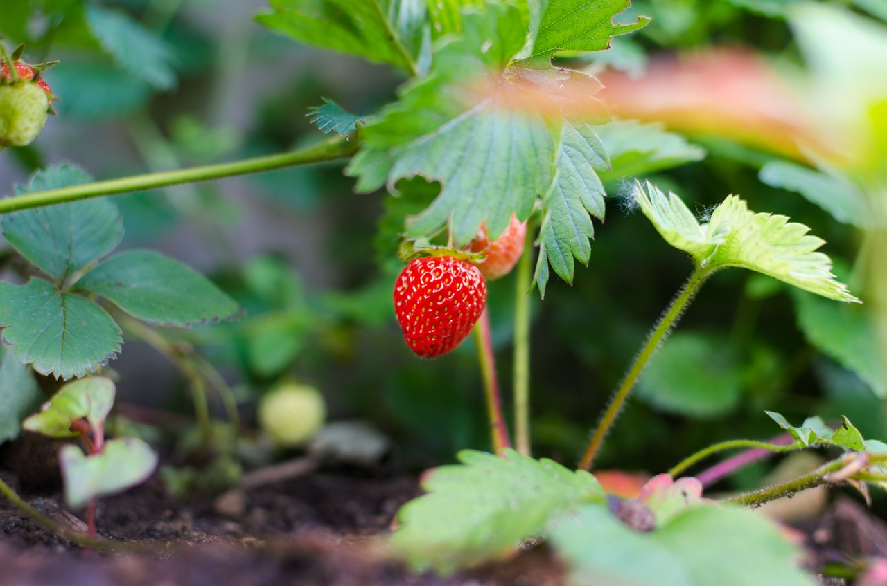

Lyra's Patches
"Growing veggies for the soul"

Plants: Artichoke
Krush Gardens Patch
8 hours of sun, Moderate RainfallPlants: Artichoke

Backyard Patch
New York
Artichoke
"Growing veggies for the soul"
New York
Artichoke